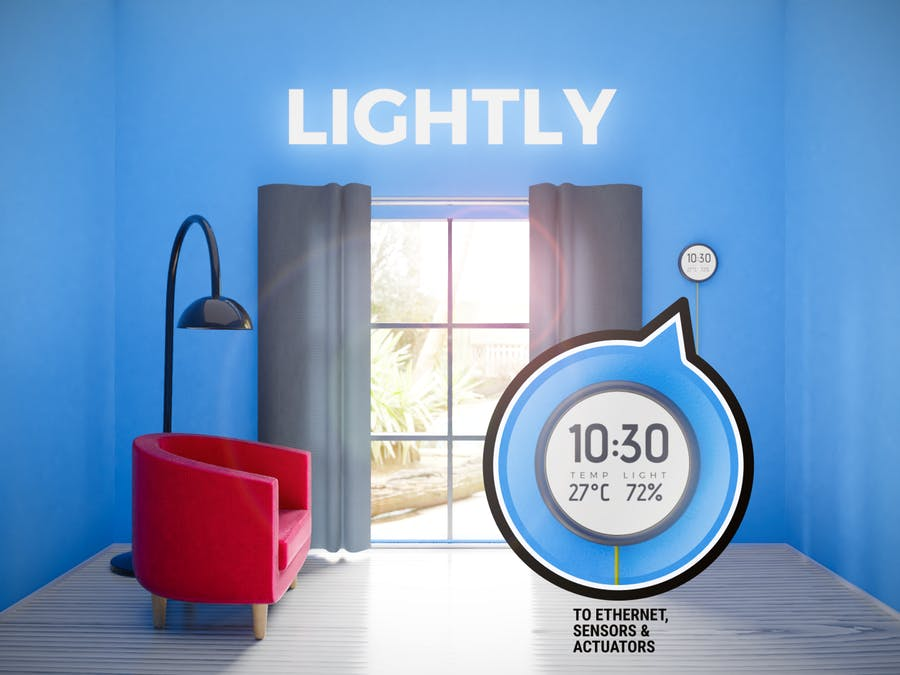
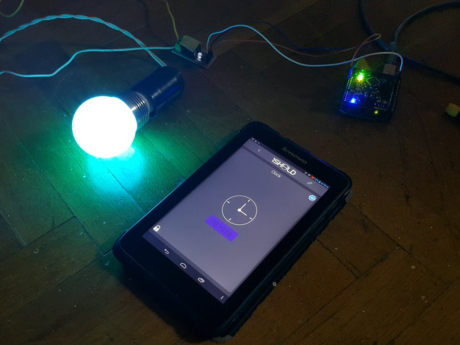
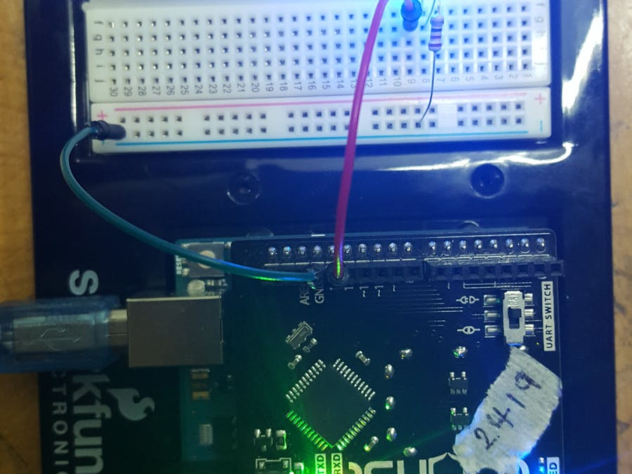

IOT PROJECT - VOICE ACTIVATED LIGHTS (SUSTAINABILITY)
Welcome to our website, where we'll be showcasing our Internet of Everything (IOE) project. Here you'll be able to interact with our protototype product which was centered around the theme of sustainability. We needed to create a prototype which was sustainable to use, something that would help cut back on the energy bills and uses as little energy as possible.
Since our prototype idea will also be aimed at students we need to think of a way incorporating some sort of interface which would help keep them engaged enough to use.
SIMILAR IOT PROJECTS - USING ARDUINO
In order to get a clearer idea of the sort of prject we wanted to undertake, we researched into a few different projects to gain some inspiration for our own. These helped us gain ideas which we could possibly implement into our own.



Click on the images above to view the projects ↗ on the page